Overview
CRYENGINE has a huge list of different built-in debugging and profiling tools. Some of them are very specific to a certain subsystem and only useful for experts. Others however, are very useful for most engine users in their regular workflow.
This document lists the profiling console variables and commands that each programmer, artist and level designer working with CRYENGINE should know. A more complete list including less common profiling/debugging CVars can be found in Debugging and Profiling Tools.
Memory Consumption and General Performance
One of the most useful commands here is "r_displayinfo 0/1/2/", and an explanation of the information displayed can be seen below.
As of CRYENGINE 5.6, turning "r_displayinfo" on/off can be achieved in three different ways:
- Via menu/button interaction
- Via console
- Via having/not having r_displayInfo in Editor.cfg (found in the CRYENGINE root folder)
(Note that the Editor.cfg is not supposed to have r_displayinfo initialised by default. While working, the Sandbox user can set the value to suit their needs, and it will be stored by the Personalization Manager. If and only if it is required that the Sandbox gets a specific value on start-up, should it be written in the Editor.cfg)
(via Menu/Button interaction) (via Console)
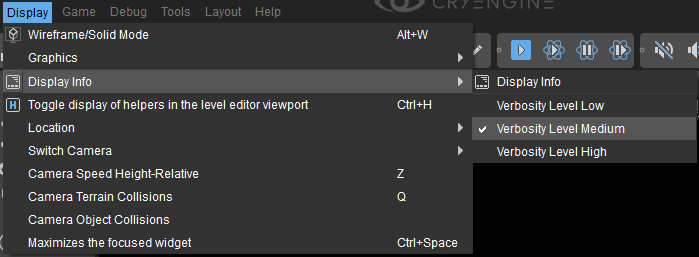 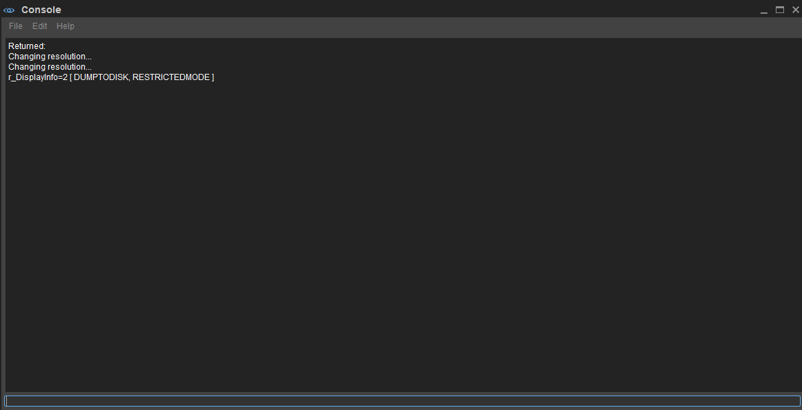
(via Editor.cfg)
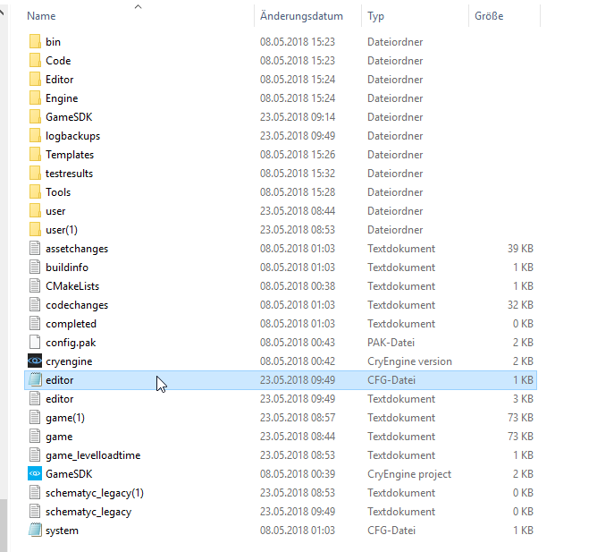
r_DisplayInfo 1
Shows basic performance stats like the current frame rate, the number of visible triangles, visible light sources and the number of drawcalls.
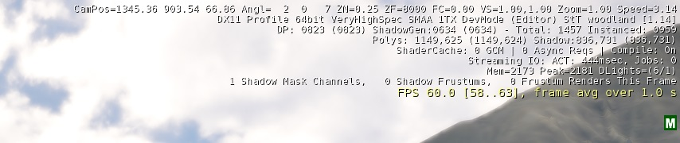
1st row
| Symbol/Text | Description |
|---|---|
| CamPos | Camera position |
| Angl | Camera orientation |
| ZN | Near-Z distance |
| ZF | Far-Z distance |
| FC | Fog culling distance |
| VS | Viewport scaling factor |
| Zoom | Camera zoom factor |
| Speed | Average camera speed |
2nd row
| Possible values | |
|---|---|
| Active renderer |
|
| Build configuration |
|
| Platform |
|
| sys_spec |
|
| Flags |
|
| Levelname | |
| Engine version |
3rd row
| Symbol/Text | Description |
|---|---|
| DP | Number of drawcalls (previous frame in parentheses) |
| ShadowGen | Number of shadow generation drawcalls (previous frame in parentheses) |
| Total | Total number of drawcalls (DP + ShadowGen) |
| Instanced | Number of instanced drawcalls |
4th row
| Symbol/Text | Description |
|---|---|
| Polys | Number of polygons (average in parentheses) |
| Shadow | Number of polygons used for shadow generation (average in parentheses) |
5th row
| Symbol/Text | Description |
|---|---|
| ShaderCache | Number of shader cache misses |
| Async Reqs | Number of async shader compilation requests |
| Compile | Shader compilation status (on/off) |
6th row
| Symbol/Text | Description |
|---|---|
| ACT | Average completion time of Streaming IO requests |
| Job | Number of open Streaming IO requests |
7th row
| Symbol/Text | Description |
|---|---|
| Vid | Video memory used |
| Mem | Memory used |
| Peak | Maximum amount of memory used |
| DLights | Number of light sources |
r_DisplayInfo 2
An enhanced version of r_DisplayInfo 1, giving more detailed information.
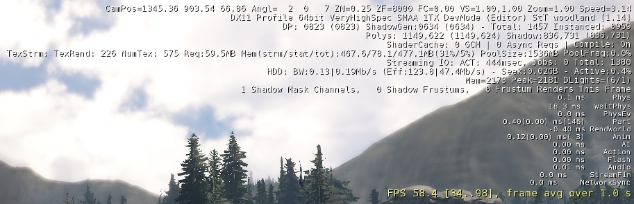
1st row
| Symbol/Text | Description |
|---|---|
| CamPos | Camera position |
| Angl | Camera orientation |
| ZN | Near-Z distance |
| ZF | Far-Z distance |
| FC | Fog culling distance |
| VS | Viewport scaling factor |
| Zoom | Camera zoom factor |
| Speed | Average camera speed |
2nd row
| Possible values | |
|---|---|
| Active renderer |
|
| Build configuration |
|
| Platform |
|
| sys_spec |
|
| Flags |
|
| Levelname | |
| Engine version |
3rd row
| Symbol/Text | Description |
|---|---|
| DP | Number of drawcalls (previous frame in parentheses) |
| ShadowGen | Number of shadow generation drawcalls (previous frame in parentheses) |
| Total | Total number of drawcalls (DP + ShadowGen) |
| Instanced | Number of instanced drawcalls |
4th row
| Symbol/Text | Description |
|---|---|
| Polys | Number of polygons (average in parentheses) |
| Shadow | Number of polygons used for shadow generation (average in parentheses) |
5th row
| Symbol/Text | Description |
|---|---|
| ShaderCache | Number of shader cache misses |
| Async Reqs | Number of async shader compilation requests |
| Compile | Shader compilation status (on/off) |
6th row
| Symbol/Text | Description |
|---|---|
| Loaded | Number of finished CGF streaming requests |
| InProg | Number of CGF streaming requests that are in progress |
| All | Total number of CGF streaming requests |
| Act | Number of active CGF streaming requests |
| MemUsed | Amount of memory allocated for CGF streaming |
| MemReq | Amount of memory required for CGF streaming |
| Pool | Size of the CGF streaming pool |
7th row
| Symbol/Text | Description |
|---|---|
| TexRend | Number of textures accessed during the last frame |
| NumTex | Number of streamed textures |
| Req | Amount of memory allocated for texture streaming |
| Mem(strm/stat/tot) | Amount of memory required for streamed/static/all textures (percentage of streamed and static in parentheses) |
| PoolSize | Size of the texture streaming pool |
| PoolFrag | Fragmentation level of the texture streaming pool |
8th row
| Symbol/Text | Description |
|---|---|
| ACT | Average completion time of Streaming IO requests |
| Job | Number of open Streaming IO requests |
| Total | Total number of streaming requests |
9th row
| Symbol/Text | Description |
|---|---|
| BW | Hard drive bandwidth [Current|Session] |
| Eff | Effective hard drive bandwidth [Actual|Average] |
| Seek | Average seek offset |
| Active | Average active time |
10th row
| Possible values | |
|---|---|
| Load state |
|
| Number of checkpoint loads |
11th row
| Symbol/Text | Description |
|---|---|
| Vid | Video memory used |
| Mem | Memory used |
| Peak | Maximum amount of memory used |
| DLights | Number of light sources |
r_DisplayInfo 3
Simplified version displaying only FPS (Frames Per Second) and Frame Time in milliseconds.
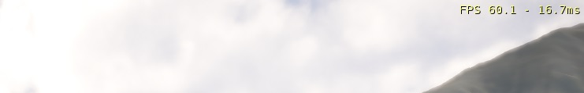
sys_enable_budgetmonitoring 1
Displays the budget monitor which gives a visual indication on how much of the fixed budget for memory, drawcalls, triangle count, etc. is consumed by the current camera view.
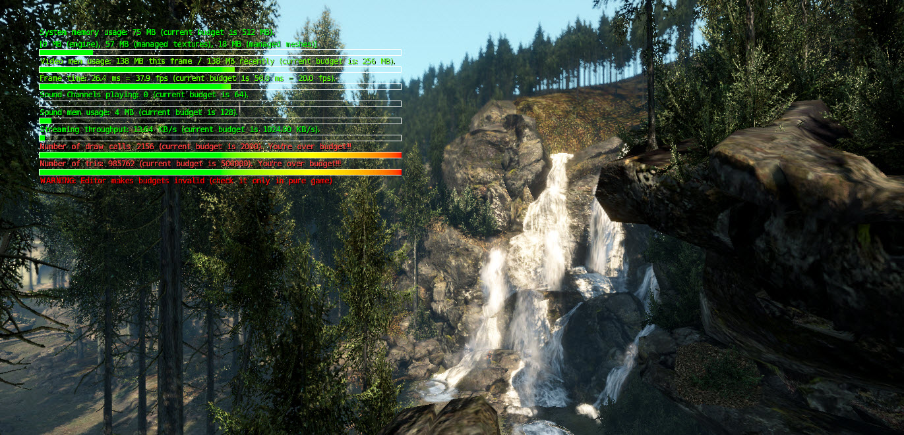
SaveLevelStats
Creates and XML report with statistics for the currently loaded level. The report includes all assets that are loaded, their size, dependencies and the number of instances in the scene. The report can be viewed with Excel.
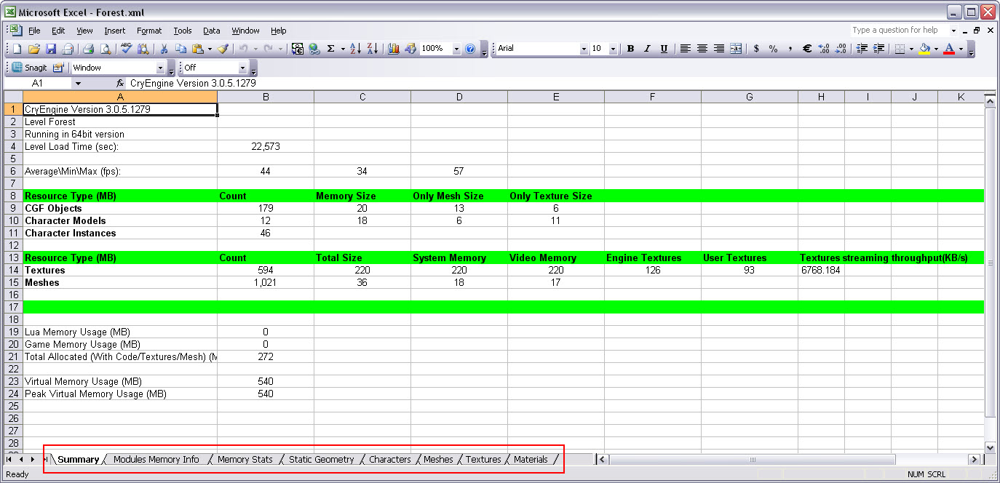
MemInfo 1
Displays individual memory statistics for each module of CRYENGINE.
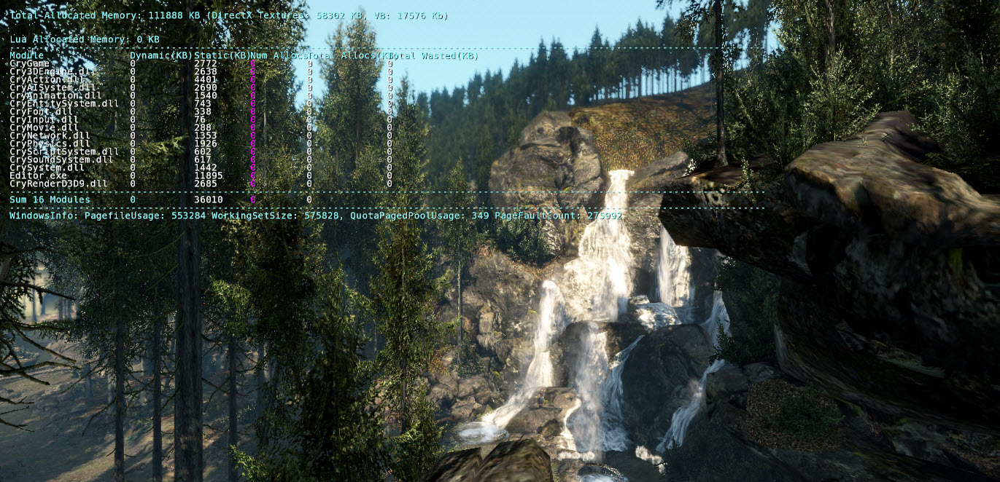
MemStats 2000
Shows memory statistics for all modules, including sub-module specific information. The value 2000 specifies that the data is updated every two seconds.
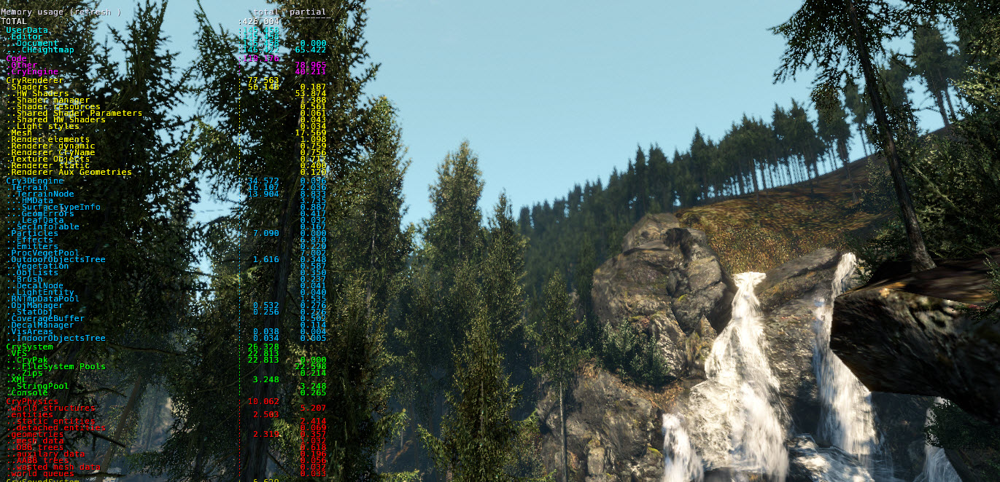
Profile
Shows a list of the most expensive function that are executed. This tool is mainly for programmers but it can also give some clues to artists.
If for example a function with the name "vegetation" or "particle" is at the top of the list, chances are high that the vegetation or particle usage is too heavy.
You can pause the information flow to highlight a particular function in the list by pressing Scroll Lock.
(Jump in game if you are in the editor) to allow you to use the up / down arrow keys to cycle through the list. Press Scroll Lock again to un-pause the debug stream.
profile 1
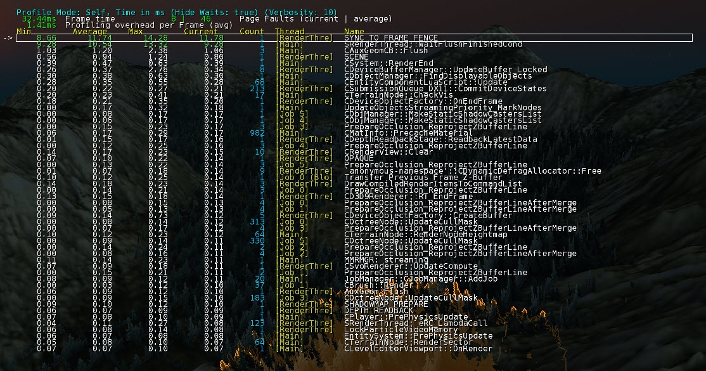
profile 2
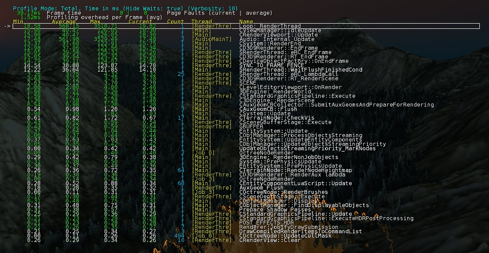
profile 3
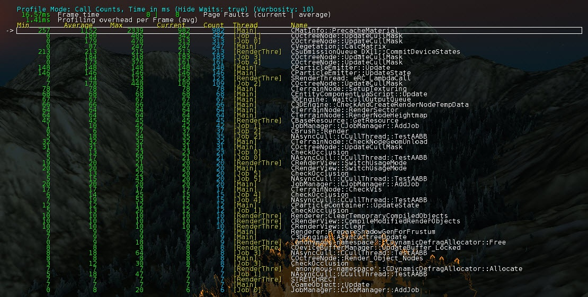
profile 4
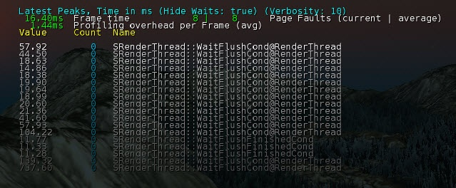
profile 5
Displays information on the worker thread utilization.
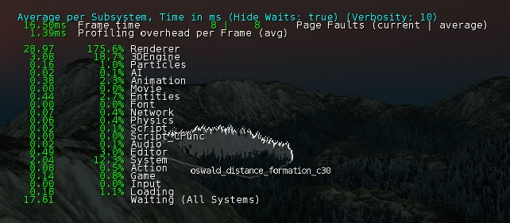
profile 6
Shows the time in milliseconds and percentage of the overall frame time that each subsystem consumes.
This is the most artist / designer friendly profile mode.
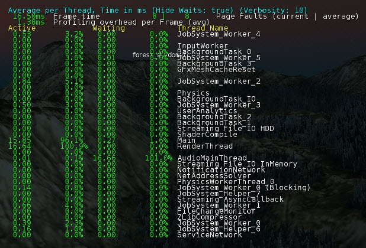
Profile 7
This only shows the header.
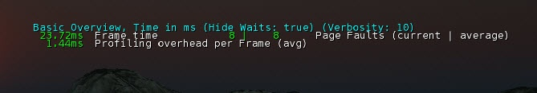
profile_allthreads 1
Shows timings for functions in all threads (only those in the main thread are shown by default). Functions not in the main thread are postfixed with " @threadname".
profile_smooth
Sets the averaging info for profile stats. Set to a longer interval to get smoother results, or perform long-term timing.
profile_filter
Limits the function profiling information to a specified subsystem/module. Valid subsystem names are Renderer, 3DEngine, Particle, Animation, AI, Entity, Physics, Sound, System, Game, Editor, Script and Network.
Profiling Data in the Entity System
es_profileComponentUpdates=3
This is a new profiling tool (with CRYENGINE 5.6) that allows users to track the number of entity events being sent each frame, as well as the cost in milliseconds.
This is exposed by allowing designers to set es_profileComponentUpdates=3, enabling on-screen profiling of all entity events. For example:
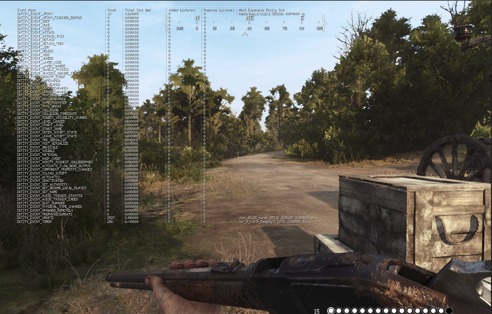
Profiling data is now tracked in the entity system, with a generic implementation for CEntity::SendEvent. Performance critical events that are handled by the entity system itself instead of individual entity instances additionally add to the same structure. This is then drawn to screen once per frame, with the most expensive entity for each event being highlighted.
Rendering Performance
r_Profiler 1
A new profiling tool for Artists & Designers to have an overview of the scene budget. (Replaces the previous tools r_ArtProfile, r_stats 15, 16 & r_ShowMT)
The Overview section details the time spent on the Main, Render, GPU & also the time the CPU is waiting for the GPU.
The GPU time section is broken down into the major categories, Ocean Reflections, Scene, Shadows, Lighting & VFX. The sections gives you the time spent in ms as well as a percentage of the total scene cost.
You can specify a target FPS (r_profilerTargetFPS 30), to align the tool to measure against. Default is 30.

r_Profiler 2
This tool is the same as the r_stats 17. To unify the profiling tools into one place we have moved it into the r_Profiler for consistency (& removed the r_stats variation). This tool is more specifically targeted towards programmers, where we give the full scene breakdown costs.
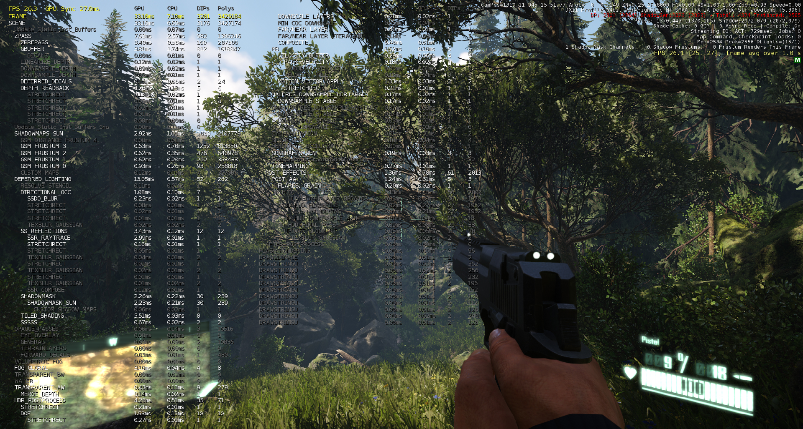
r_DeferredShadingDebug 1
Visualizes the 4 render targets. Top Left - ZTarget, Top Right - SceneNormalMap, Bottom left - SceneDiffuseAcc, Bottom Right - SceneSpecularAcc.
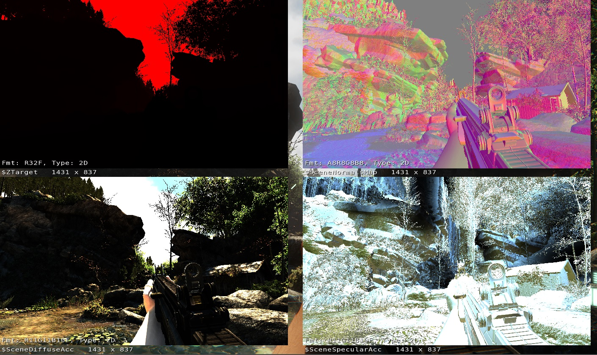
r_DeferredShadingDebug 2
Visualizes the light overdraw. Debug deferred lighting fillrate. Brighter colors mean that the lighting calculations are more expensive for the specific area.
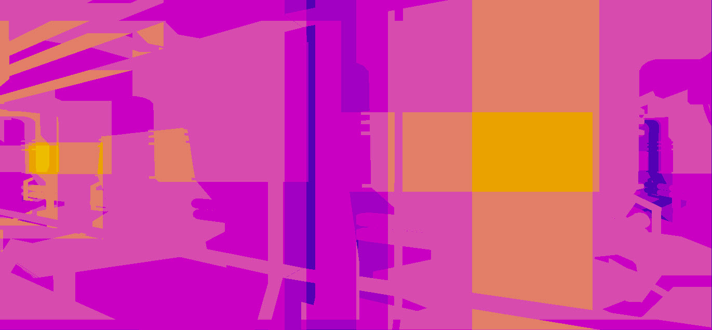
e_DebugDraw 16
Enables the debug gun which shows various rendering related information for the scene object that is currently in focus.
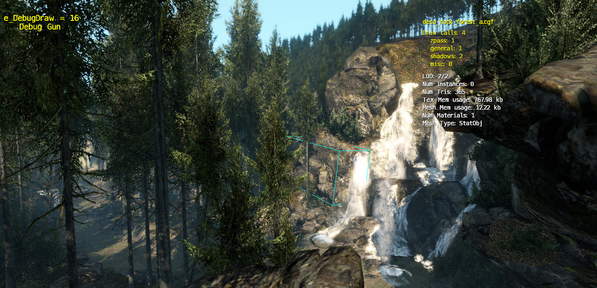
r_PostProcessEffects 2
Lists all post-processing effects that are currently active.
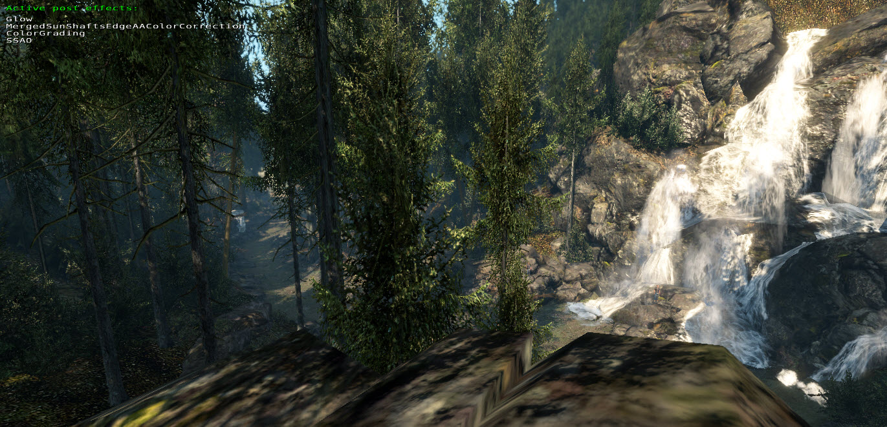
r_MeasureOverdraw
Visualizes the overdraw and indicates how expensive the rendering on the screen is.
r_MeasureOverdraw 1
Pixel shader
r_MeasureOverdraw 2
Pass count
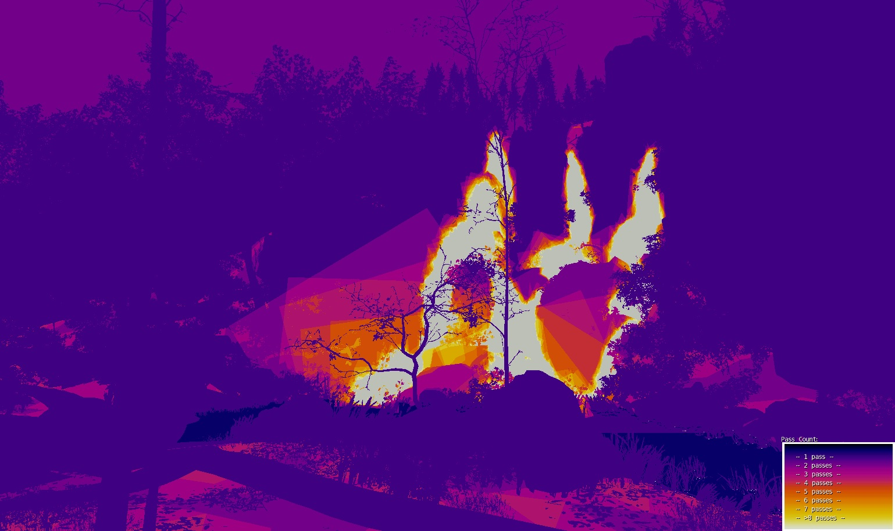
r_MeasureOverdraw 3
Vertex shader
Particles
r_ParticlesDebug 1
Enable this to investigate the screen coverage of the particles.
- Red = Bad
- Blue = Good
In the picture below, the same pfx is displayed, but due to the distance from the camera, the screen coverage is a lot less.
So the distant pfx is shaded blue in this debug view.
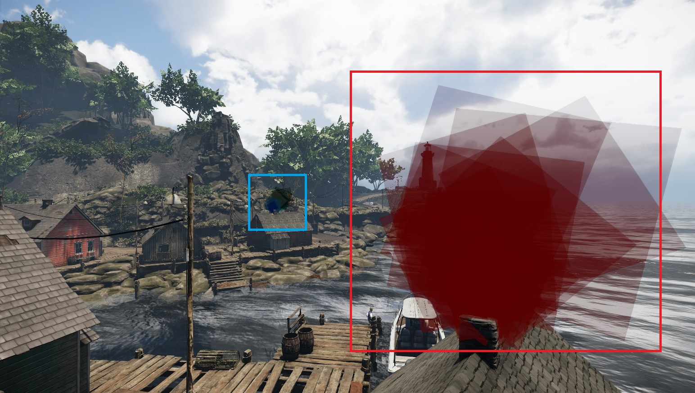
r_ParticlesDebug 2
Enable version 2 to display particle overdraw.
- White = Really bad
- Red = Bad
- Blue = Good
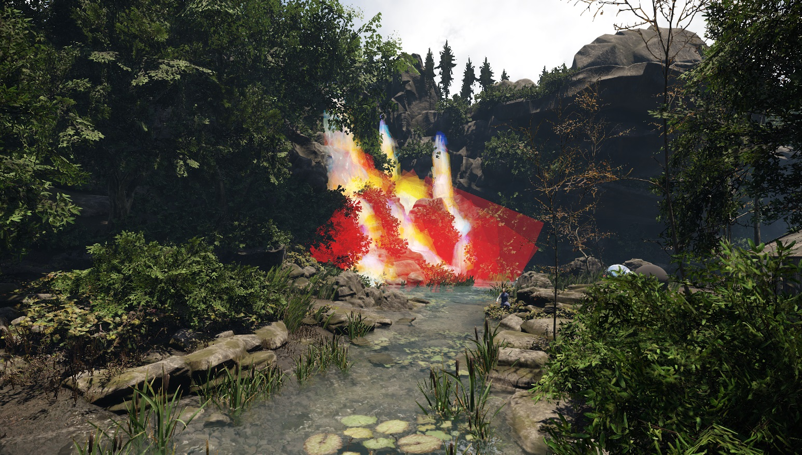
e_ParticlesDebug 1
Displays particle counts at the top of the screen (only if r_DisplayInfo = 1).
If you are interested in particle performance at all, add this command to your system.cfg or user.cfg file!
You can additionally add in extra debug information at run-time but adding in specific flags (see below). To set these extra flags use "+" or to remove flags use the "-".
e_ParticlesDebug b+
Draws bounding boxes and labels for all particle emitters.
e_ParticlesDebug c+
Disable clipping against water and vis area bounds
e_ParticlesDebug d+
d = force dynamic bounds and update for all emitters
e_ParticlesDebug m+
Displays memory usage
e_ParticlesDebug r+
Display reiteration, rejection, and collision statistics
e_ParticlesDebug z+
Freeze the particle system
e_ParticleMemory
Prints count and memory usage for loaded effects and active emitters to the console.
e_Particles 0
Disables particle generation, and most emitter processing. Some emitter updating overhead is still active, however.
e_ParticlesProfile 1
Displays statistics of the particle system in the top left of the viewport. (must have e_ParticlesDebug 1 enabled to get the full statistics)
This debug view list information on...
- Object pool
- Vertex Buffer
- Index Buffer
- Fill Rate
At the bottom, it also list the top 5 offenders in the Vertex/Index pool. To easily help track down problematic pfx.
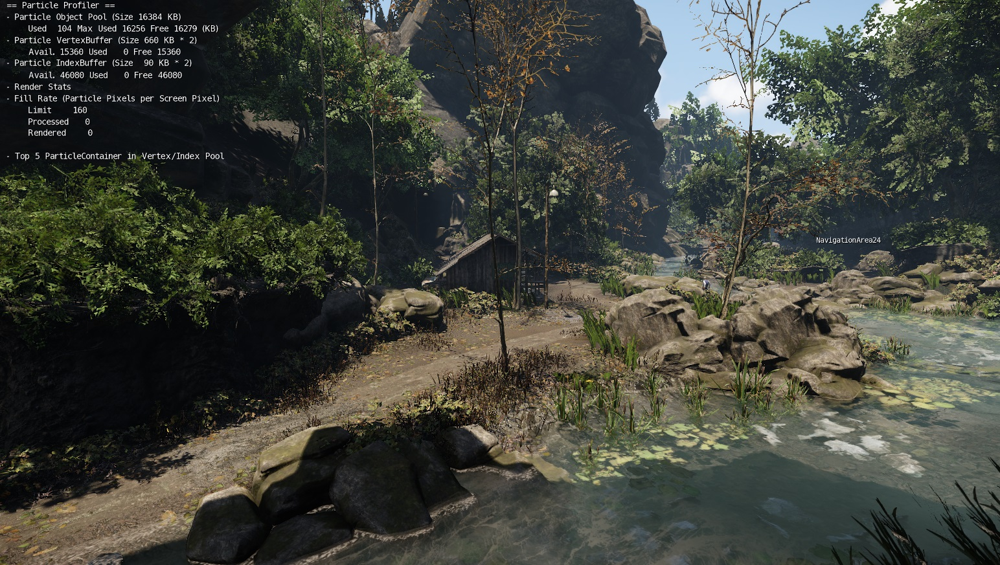
stats_Particles
Details information in a table format about the current active particles in the scene.
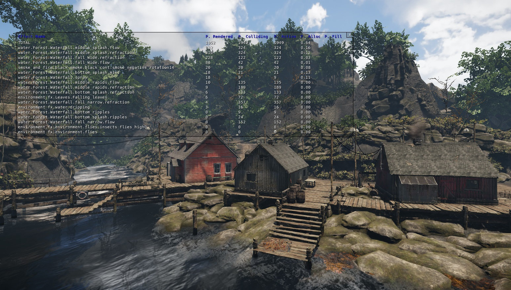
AI
ai_DebugDraw 1
Gives a basic overview of all AI agents that are on the map.
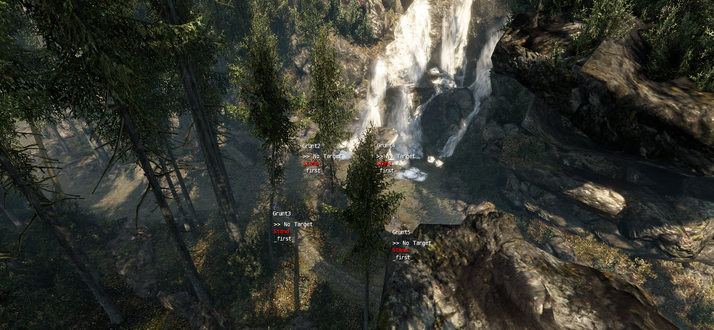
ai_DebugDrawNavigation 1
Displays the nav mesh for the MNM system.
Blue is classed as navigable area where it is valid for the AI to move. Red areas are cut off from the main mesh to show that it is not reachable.
Other variations of the Cvar - 0 - off, 1 - triangles and contour, 2 - triangles, mesh and contours, 3 - triangles, mesh contours and external links.
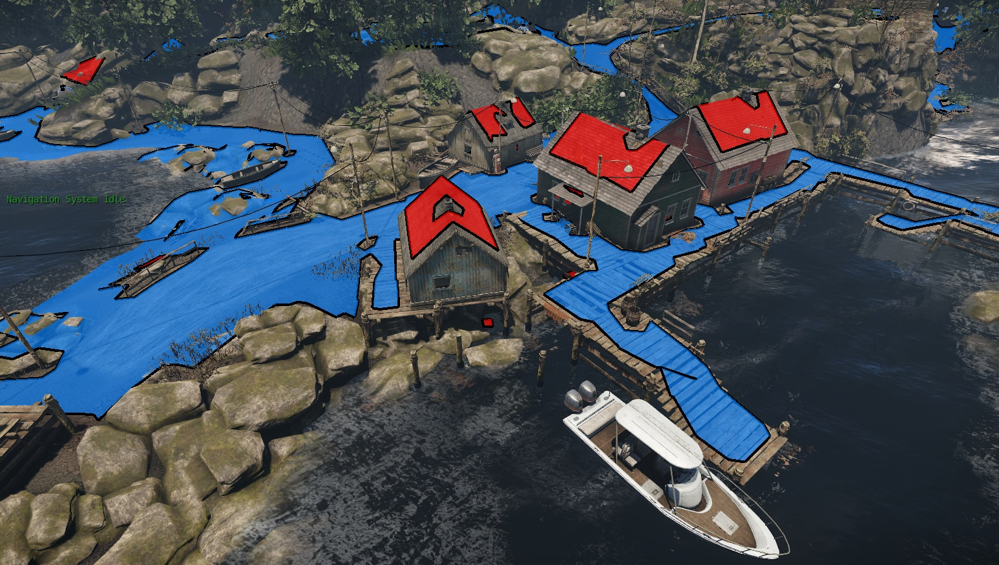
ai_StatsDisplayMode 1
Displays information on the number of active AI agents, full AI updates per frame and the number of TPS queries that are processed each frame.
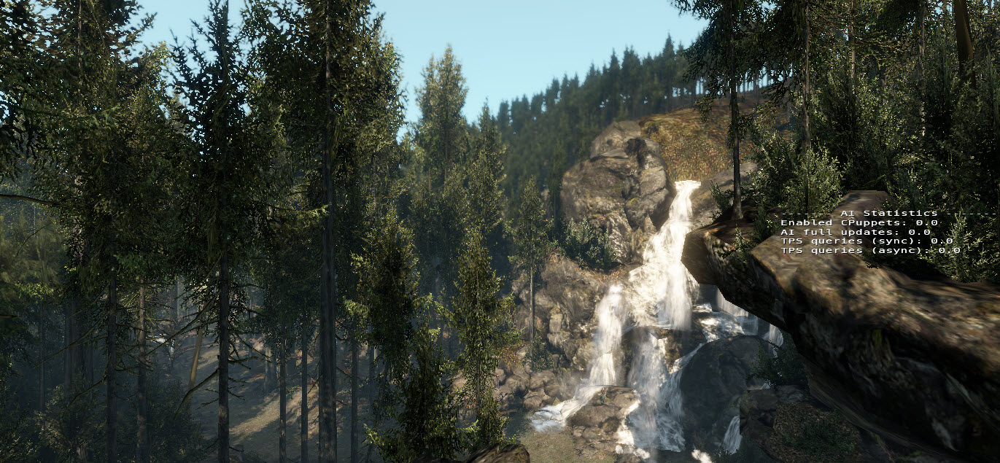
Vegetation
e_vegetation 1 / 0
This is the main CVar the will turn on / off the rendering of the vegetation. 1 = on, 0 = off.
e_MergedMeshesDebug 1
This view provides statistics about the Global memory consumption of the vegetation objects placed in the level. Attached below the r_displayinfo
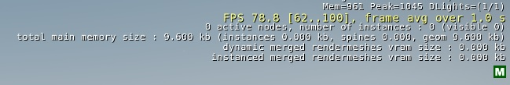
e_MergedMeshesDebug 2
This view breaks down the vegetation into the “cells” that form the merged meshes.
They are colour coded over distance, and what you want to be seeing is the red boxes should only be around the player, (the 1 cell you are standing in, and then the surround 8) Beyond this they should all be green.
Floating above each cell contains the information about the current LOD step & current memory consumption about the cell ( will update as you move closer / further away).
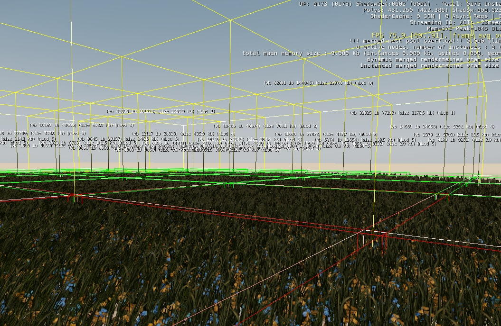